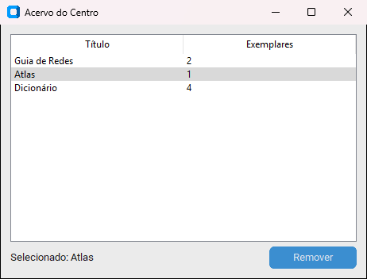
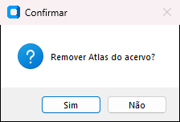
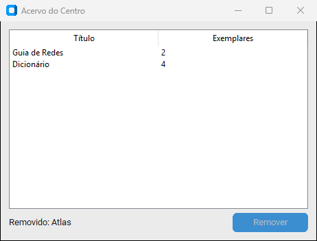
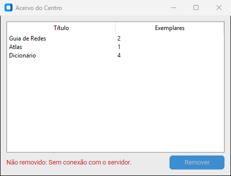
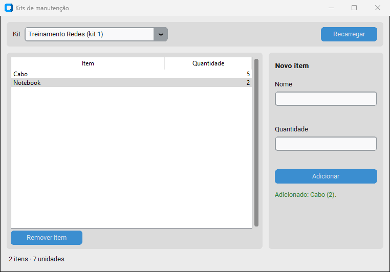
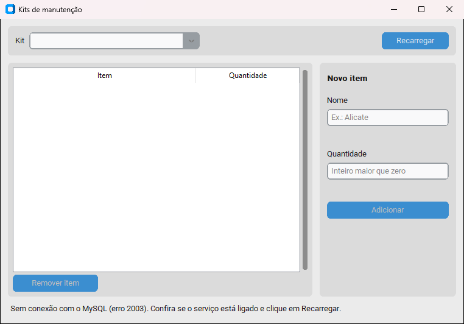

Técnico em Desenvolvimento de Sistemas · Plano de Curso 01/2025
Grave e apague pela janela: cadastro e listagem no MySQL
A janela da A12 valida e entrega o item, mas nada chega ao banco. Hoje o Adicionar grava no MySQL numa transação, somando no item de mesmo nome; a lista ganha seleção e o botão Remover, com confirmação; e a janela sobrevive ao MySQL desligado, avisando no status em vez de fechar. No fim, você depura uma ligação herdada que dizia Adicionado sem gravar e apagava o item errado.
A aula continua na janela da A12, no MySQL da A08 e com o em_transacao da A10. Editar o item e manter a janela em dia com o que outras pessoas gravam ficam para a A14. Use dados fictícios.
Gravar pela janela com uma transação por ação, reaproveitando repositório e em_transacao
Somar no item de mesmo nome com SELECT ... FOR UPDATE, e explicar por que o nome do MySQL não diferencia maiúsculas
Usar a seleção da lista (o evento virtual <<TreeviewSelect>>) e confirmar antes de apagar pelo id
Traduzir a falta do MySQL em ConnectionError na ligação e mostrar o aviso na janela sem fechá-la
Rastrear e corrigir uma ligação herdada a partir de quatro relatos, ligando cada defeito a um teste
Antes de começar
Projeto da A12: kits/janela.py com validação e eventos, abrir_janela.py com fontes e anotar, tests/test_janela.py e tests/test_fontes.py
em_transacao da A10 (com três tentativas) e remover_item da A09 em kits/repositorio.py
MySQL Server 8.4 ligado, com os bancos kits e kits_teste e o usuário kits_app; permissão para parar e ligar o serviço MySQL84, ou o professor faz isso no projetor
Antes do seu abrir_janela.py, alguém fez outra ligação entre a janela e o banco, abrir_legado.py, e vieram quatro relatos. Adicionar mostra Adicionado: Alicate (4), mas o Alicate não aparece na lista, nem fechando e abrindo a janela. Depois que um colega mexeu nisso, adicionar Cabo no kit 1 passou a criar uma segunda linha Cabo.
Remover o Cabo do kit 1 apagou também o Cabo do kit 2. E, com o MySQL desligado, a janela nem abre: aparece um traceback com o número 2003.
Em dupla, antes de abrir o código: a janela é a mesma da A12, que passou em todos os testes. Onde podem estar os defeitos, e que teste da A12 poderia ter pego algum deles?
Entrega desta aula
No repositório do projeto: adicionar_item em kits/repositorio.py; kits/janela.py com Remover, Recarregar e o aviso de banco fora; abrir_janela.py com protegido, fontes e gravacoes; tests/test_janela.py e tests/test_fontes.py; e a seção Cadastro e remoção no banco no README.md. Faça um commit revisado e envie pelo canal combinado com a turma junto com o registro exportado desta página. Critério: os testes passam e, pela janela, Cabo com 2 leva o Cabo do kit 1 a 5 no banco kits.
Cada ação da janela é uma transação curta: abrir, fazer, commit. Nada de uma conexão aberta enquanto a pessoa pensa, como no relato 4 da A11. A ligação usa a em_transacao da A10, que faz commit no fim, desfaz no erro e tenta de novo no deadlock. O relato 1 de hoje é o contrário: uma conexão aberta à mão, um INSERT e um close sem commit. O conector começa com o autocommit desligado, e fechar sem commit desfaz o que estava pendente. A janela disse Adicionado porque ninguém reclamou.
Adicionar um item que o kit já tem soma no existente, como a transferência da A10: um item por nome em cada kit. Para isso, adicionar_item procura o item de mesmo nome com SELECT ... FOR UPDATE e decide: se existe, UPDATE; se não, INSERT. O FOR UPDATE segura o que leu até o commit. Sem ele, dois cadastros de Alicate ao mesmo tempo leem que não há Alicate e criam duas linhas; os testes do projeto provam isso com dois técnicos.
O MySQL compara textos pela regra de comparação da tabela, e a padrão do 8.4, utf8mb4_0900_ai_ci, não diferencia maiúsculas de minúsculas: WHERE nome = 'cabo' encontra o Cabo. Para os kits, é o que se quer: cabo e Cabo são o mesmo item, e a soma vai para a linha que já existia, com o nome como estava.
Conexão à mão, sem commit
O INSERT fica pendente e o close o desfaz. A janela mostra Adicionado mesmo assim.
con = mysql.connector.connect(**ler_config())
cur = con.cursor()
cur.execute('INSERT INTO item ...', valores)
con.close()
Uma em_transacao por ação
Commit no fim, rollback no erro, nova tentativa no deadlock.
Na A11, cada linha da lista guardou o id do item como iid. Agora ele serve: lista.selection() devolve o iid da linha escolhida, e remover recebe esse id. Apagar pelo nome, como no relato 3, apaga todos os itens com aquele nome, de todos os kits.
Quando a seleção muda, por clique ou pelas setas do teclado, o Treeview gera o evento virtual <<TreeviewSelect>>, com dois sinais de menor e maior. Ele é ligado com bind, como o Enter da A12. A janela usa esse evento para ligar o botão Remover só quando há uma linha escolhida; trocar de kit desliga de novo.
Remover não tem volta, então a janela pergunta antes, com o nome do item. A pergunta usa tkinter.messagebox.askyesno, uma caixa de diálogo do próprio Windows que espera Sim ou Não e devolve True ou False. A janela não chama messagebox direto: recebe uma função perguntar, como recebe adicionar. Nos testes, perguntar é uma função de mentira que responde o que o teste quiser, sem abrir caixa nenhuma.
Um aplicativo desktop fica aberto por horas, e o banco pode parar no meio: o serviço foi desligado, a rede caiu, o servidor reiniciou. O conector avisa com erros numerados: 2003 (não conseguiu conectar), 2013 (perdeu a conexão no meio de um comando), 2055 e 2005 (conexão perdida ou servidor não encontrado). Sem tratamento, o erro vira traceback no terminal: ao abrir, a janela nem aparece; depois de aberta, o callback falha e a pessoa não vê nada.
A janela não sabe SQL nem conhece o conector, então quem traduz é a ligação: protegido roda a operação e troca esses erros por ConnectionError, uma exceção do próprio Python, com uma mensagem que diz o que fazer. A janela mostra ConnectionError como mostra LookupError e ValueError: no status ou no aviso, sem fechar e sem apagar o que foi digitado. O botão Recarregar tenta de novo.
Só esses erros são traduzidos. Uma senha errada (1045) ou um SQL errado (1064) continuam como vieram: não são o banco fora do ar, são defeitos ou configuração, e escondê-los atrás de um aviso educado atrasaria o conserto.
Quem trata o quê
Situação
Quem percebe
O que a pessoa vê
Quantidade dez
A janela, com ler_quantidade
O erro embaixo do campo Quantidade
Kit removido por outra pessoa
adicionar_item, com o erro 1452 traduzido em LookupError
Não adicionado: Kit N não existe
Item já removido por outra pessoa
remover_item, com rowcount 0
Não removido: Item N não existe
MySQL desligado
protegido, com os erros 2003, 2005, 2013 e 2055
A mensagem no status ou no aviso, e o botão Recarregar
Senha errada no banco.ini
Ninguém traduz: é configuração
O traceback no terminal, com o erro 1045
Tutorial: remover do acervo, com pergunta e falha ↗
O tutorial usa um acervo de livros guardado num dicionário, sem banco: o assunto é a seleção, a pergunta e a falha. Crie acervo.py na raiz do projeto com o código do passo 1. Os passos seguintes entram antes do janela.mainloop(), ou trocam uma função, como diz cada legenda. Rode com .\.venv\Scripts\python.exe acervo.py.
As imagens são capturas reais das janelas geradas por esse código, depois das ações de cada legenda, no Windows 11 com CustomTkinter 6.0.0, inclusive a caixa de diálogo. A tela do terminal veio da execução do mesmo código.
Repare: O botão está desligado e ainda não tem command: nada acontece.
Passo 2 · Antes do janela.mainloop(): a seleção liga o botão
def selecionou(_evento):
escolhido = lista.selection()
remover.configure(state='normal' if escolhido else 'disabled')
if escolhido:
aviso.configure(text=f'Selecionado: {lista.item(escolhido[0], "values")[0]}', text_color=('gray10', '#DCE4EE'))
lista.bind('<<TreeviewSelect>>', selecionou)
Passo 2 · Escolha o Atlas
Rode e clique na linha do Atlas.

Repare: O <<TreeviewSelect>> chegou com o evento, por isso selecionou recebe _evento.
Passo 3 · Antes do janela.mainloop(): perguntar e apagar
def apagar(livro_id):
del ACERVO[livro_id]
def remover_selecionado():
livro_id = int(lista.selection()[0])
titulo = ACERVO[livro_id][0]
if not messagebox.askyesno('Confirmar', f'Remover {titulo} do acervo?'):
return
apagar(livro_id)
aviso.configure(text=f'Removido: {titulo}')
mostrar()
remover.configure(command=remover_selecionado)
Passo 3 · A pergunta
Rode, escolha o Atlas e clique em Remover.

Repare: Enquanto a caixa está aberta, a janela de trás não responde: o askyesno só volta com a resposta.
Passo 4 · Depois do Sim
Responda Sim.

Repare: mostrar leu o acervo de novo e desligou o botão: não há mais linha escolhida.
Passo 5 · Troque a função apagar: o servidor não responde
def apagar(livro_id):
raise ConnectionError('Sem conexão com o servidor.')
Passo 5 · O erro que a janela engole
Rode, escolha o Atlas, clique em Remover e responda Sim. A janela não muda; olhe o PowerShell.
PS C:\projetos\kits> .\.venv\Scripts\python.exe acervo.py
Exception in Tkinter callback
Traceback (most recent call last):
File "C:\Python314\Lib\tkinter\__init__.py", line 2114, in __call__
return self.func(*args)
~~~~~~~~~^^^^^^^
File "C:\projetos\kits\.venv\Lib\site-packages\customtkinter\windows\widgets\ctk_button.py", line 564, in _on_release
self._command()
~~~~~~~~~~~~~^^
File "C:\projetos\kits\acervo.py", line 50, in remover_selecionado
apagar(livro_id)
~~~~~~^^^^^^^^^^
File "C:\projetos\kits\acervo.py", line 42, in apagar
raise ConnectionError('Sem conexão com o servidor.')
ConnectionError: Sem conexão com o servidor.
Repare: O ConnectionError escapou do callback do clique (_on_release). A pessoa respondeu Sim e não ficou sabendo de nada.
Passo 6 · Troque a função remover_selecionado inteira
def remover_selecionado():
livro_id = int(lista.selection()[0])
titulo = ACERVO[livro_id][0]
if not messagebox.askyesno('Confirmar', f'Remover {titulo} do acervo?'):
return
try:
apagar(livro_id)
except ConnectionError as erro:
aviso.configure(text=f'Não removido: {erro}', text_color='#c62828')
else:
aviso.configure(text=f'Removido: {titulo}')
mostrar()
Passo 6 · A falha na janela
Rode, escolha o Atlas, clique em Remover e responda Sim.

Repare: O except pegou só o ConnectionError. O Atlas continua na lista porque mostrar leu o acervo como ele está.
Mensagens desta aula
Mensagem
O que significa
O que fazer
DatabaseError: 2003 (HY000): Can't connect to MySQL server
O MySQL não aceitou a conexão: serviço parado, porta errada ou firewall.
Ligue o serviço MySQL84 e clique em Recarregar; no código, traduza com protegido.
2013 (HY000): Lost connection to MySQL server during query
A conexão caiu no meio de um comando.
A transação foi desfeita; tente a ação de novo.
Adicionado na janela, e nada no banco
Uma conexão fechada sem commit.
Grave com em_transacao ou conexao_banco.
Duas linhas com o mesmo nome no mesmo kit
INSERT sem procurar o item de mesmo nome, ou procura sem FOR UPDATE.
adicionar_item com SELECT ... FOR UPDATE.
Exception in Tkinter callback seguido de ConnectionError
A falta do banco escapou de um callback.
Capture ConnectionError na janela e mostre no aviso.
Continue no repositório do projeto, na raiz, com o .venv e o banco.ini da A08. Uma pessoa opera e a outra confere; troquem os papéis depois do intervalo.
A ordem importa: repositório, ligação com os testes no kits_teste, janela com os testes de mentira e só então a ligação herdada. Se consultar IA, registre a ajuda recebida e confirme cada sugestão rodando os testes.
Depois de adicionar Cabo com 2 e escolher o Notebook
Capturada com abrir_janela.py gravando no banco kits.

Com o MySQL fora do ar
Capturada com abrir_janela.py e o banco.ini apontando para uma porta sem MySQL: o conector deu o erro 2003 de verdade.

kits/repositorio.py: adicionar_item
Acrescente adicionar_item(con, kit_id, item) ao repositório, seguindo os comentários: procura travando o item de mesmo nome no kit, soma nele ou cria com inserir_item, traduz o kit inexistente em LookupError e devolve o id. Não faz commit nem rollback. Entrega: kits/repositorio.py.
Concluído quando: Os testes de gravação de tests/test_fontes.py passam, inclusive o dos dois cadastros ao mesmo tempo, e os testes das aulas anteriores continuam passando.
Dica para realizar a atividade
Volte à transferir da A10: ela já procura o item de mesmo nome no destino. O que dá para reaproveitar?
# Acrescente ao fim do seu kits/repositorio.py.
def adicionar_item(con, kit_id, item):
"""Põe o item no kit: soma no item de mesmo nome, se houver, ou cria um. Devolve o id.
Não grava nem desfaz: rode dentro de em_transacao."""
# 1. Procure, TRAVANDO, o item com esse nome nesse kit.
# 2. Se existe, some a quantidade nele e devolva o id dele.
# 3. Se não existe, crie com inserir_item (A08) e devolva o id novo.
# Kit inexistente (erro 1452): LookupError('Kit N não existe').
...
Na raiz do projeto. Testes: .\.venv\Scripts\python.exe -m unittest -v, na raiz do projeto, com o MySQL ligado e o banco.ini da A08. Os testes recriam as tabelas no kits_teste; o kits fica intacto.
abrir_janela.py: protegido, fontes e gravacoes
Complete abrir_janela.py seguindo os comentários: protegido traduz os erros de SEM_CONEXAO em ConnectionError; fontes devolve kits e itens, como na A12, passando por protegido; gravacoes devolve adicionar e remover, cada uma numa em_transacao e passando por protegido. O anotar da A12 sai. Entrega: abrir_janela.py.
Concluído quando: Os testes de tests/test_fontes.py passam, inclusive os três que você vai completar, e a janela abre com os itens do banco kits.
Dica para realizar a atividade
Por que protegido recebe uma função sem argumentos (operacao), e não o resultado de uma chamada?
"""Abre a janela de itens ligada ao MySQL. Uso: python abrir_janela.py"""
from tkinter import messagebox
import mysql.connector
from kits.banco import conexao_banco, em_transacao
from kits.janela import JanelaItens
from kits.repositorio import adicionar_item, listar_itens, listar_kits, remover_item
# Erros do conector que querem dizer "o MySQL não está respondendo": recusado, perdido no meio, fechado.
SEM_CONEXAO = {2003, 2005, 2013, 2055}
def protegido(operacao):
"""Roda operacao() e troca a falta do MySQL (os errno de SEM_CONEXAO) por ConnectionError, com uma
mensagem que diga o erro e o que fazer. Qualquer outro erro segue como veio."""
...
def fontes(config=None):
"""kits() e itens(kit_id), como na A12, agora passando por protegido."""
...
def gravacoes(config=None):
"""adicionar(kit_id, item) e remover(item_id): cada uma numa em_transacao, passando por protegido."""
...
def perguntar(texto):
return messagebox.askyesno('Confirmar', texto)
if __name__ == '__main__':
JanelaItens(*fontes(), *gravacoes(), perguntar).mainloop()
Na raiz do projeto. Testes: .\.venv\Scripts\python.exe -m unittest -v, na raiz do projeto, com o MySQL ligado e o banco.ini da A08. Os testes recriam as tabelas no kits_teste; o kits fica intacto.
tests/test_fontes.py: gravar, remover e banco fora
O arquivo substitui o da A12 e já tem oito testes, inclusive o de dois cadastros iguais ao mesmo tempo e o da janela gravando no banco. Escreva os três marcados com Complete: a soma no item de mesmo nome; a remoção pelo id; e o ConnectionError com o servidor fora, usando uma porta onde não há MySQL. Entrega: tests/test_fontes.py.
Concluído quando: Os onze testes passam com o seu código. Depois troque, em adicionar_item, o SELECT ... FOR UPDATE por um SELECT comum: o teste dos dois cadastros ao mesmo tempo precisa falhar. Desfaça a troca.
Dica para realizar a atividade
A porta 1 não tem MySQL em nenhuma máquina da turma. connection_timeout evita esperar demais.
"""A janela ligada ao MySQL: cada teste recria as tabelas no kits_teste."""
import threading
import unittest
from abrir_janela import fontes, gravacoes
from kits.banco import conexao_banco
from kits.janela import JanelaItens
from kits.modelo import ItemKit
from tests.test_janela import fechar
from tests.test_repositorio import TESTE, comandos
ESTOQUE_INICIAL = [(1, 1, 'Cabo', 3), (2, 1, 'Notebook', 2), (3, 2, 'Cabo', 5)]
class TestFontes(unittest.TestCase):
def setUp(self):
# Uma conexão esquecida com a transação aberta segura as tabelas e faria o DROP TABLE do esquema
# esperar para sempre. Com 5 segundos, o teste falha com o erro 1205 em vez de travar.
self.gravar('SET SESSION lock_wait_timeout = 5',
*[c for script in ('esquema.sql', 'dados.sql') for c in comandos(script)])
self.kits, self.itens = fontes(TESTE)
self.adicionar, self.remover = gravacoes(TESTE)
def gravar(self, *sqls):
with conexao_banco(TESTE) as con:
cur = con.cursor()
for sql in sqls:
cur.execute(sql)
def estoque(self):
with conexao_banco(TESTE) as con:
cur = con.cursor()
cur.execute('SELECT id, kit_id, nome, quantidade FROM item ORDER BY id')
return cur.fetchall()
# A11: ler.
def test_kits_em_ordem_alfabetica(self):
self.gravar("INSERT INTO kit (nome) VALUES ('Almoxarifado')")
self.assertEqual([nome for _, nome in self.kits()],
['Almoxarifado', 'Treinamento Redes', 'Treinamento Suporte'])
def test_itens_so_do_kit_pedido(self):
self.assertEqual(self.itens(2), [(3, 'Cabo', 5)])
self.assertEqual(self.itens(99), [])
def test_consulta_seguinte_ve_o_que_outra_conexao_gravou(self):
self.assertEqual(len(self.itens(1)), 2)
self.gravar("INSERT INTO item (kit_id, nome, quantidade) VALUES (1, 'Alicate', 4)")
self.assertIn('Alicate', [nome for _, nome, _ in self.itens(1)])
# A13: gravar.
def test_adicionar_cria_o_item_e_devolve_o_id(self):
item_id = self.adicionar(1, ItemKit('Alicate', 4))
self.assertEqual(self.estoque(), ESTOQUE_INICIAL + [(item_id, 1, 'Alicate', 4)])
def test_nome_com_outras_maiusculas_soma_no_mesmo_item(self):
# A comparação do MySQL (utf8mb4_0900_ai_ci) não diferencia maiúsculas de minúsculas.
self.assertEqual(self.adicionar(1, ItemKit('cabo', 1)), 1)
self.assertEqual(self.estoque()[0], (1, 1, 'Cabo', 4))
def test_kit_inexistente_vira_lookup_error_e_nada_muda(self):
with self.assertRaises(LookupError):
self.adicionar(99, ItemKit('Alicate', 4))
self.assertEqual(self.estoque(), ESTOQUE_INICIAL)
def test_dois_cadastros_iguais_ao_mesmo_tempo_viram_um_item(self):
largada = threading.Barrier(2)
erros = []
def tecnico():
largada.wait()
try:
self.adicionar(1, ItemKit('Alicate', 1))
except Exception as erro: # o teste quer ver qualquer erro, não escondê-lo
erros.append(erro)
tecnicos = [threading.Thread(target=tecnico) for _ in range(2)]
for t in tecnicos:
t.start()
for t in tecnicos:
t.join()
self.assertEqual(erros, [])
alicates = [linha for linha in self.estoque() if linha[2] == 'Alicate']
self.assertEqual([(kit, nome, q) for _, kit, nome, q in alicates], [(1, 'Alicate', 2)])
def test_janela_com_o_banco_adiciona_e_remove(self):
janela = JanelaItens(self.kits, self.itens, self.adicionar, self.remover, lambda texto: True)
self.addCleanup(fechar, janela)
janela.update()
janela.nome.insert(0, 'Cabo')
janela.quantidade.insert(0, '2')
janela.adicionar.invoke()
self.assertEqual([janela.lista.item(i, 'values') for i in janela.lista.get_children()],
[('Cabo', '5'), ('Notebook', '2')])
janela.lista.selection_set('2')
janela.update()
janela.remover.invoke()
self.assertEqual(self.estoque(), [(1, 1, 'Cabo', 5), (3, 2, 'Cabo', 5)])
# Complete: adicionar Cabo com 2 no kit 1 soma no item 1, que fica com 5, e devolve 1.
# Complete: remover(1) apaga só o item 1; remover(1) de novo levanta LookupError.
# Complete: com a porta 1 na configuração ({**TESTE, 'port': 1, 'connection_timeout': 3}), kits, itens,
# adicionar e remover levantam ConnectionError com a mensagem do erro 2003.
Na raiz do projeto. Testes: .\.venv\Scripts\python.exe -m unittest -v, na raiz do projeto, com o MySQL ligado e o banco.ini da A08. Os testes recriam as tabelas no kits_teste; o kits fica intacto.
kits/janela.py: Remover, Recarregar e o banco fora
Faça na sua JanelaItens da A12 as mudanças descritas no arquivo: cinco funções recebidas; Recarregar no topo e Remover item embaixo da lista; o <<TreeviewSelect>> ligando o Remover; recarregar e mostrar tratando ConnectionError; e remover_selecionado perguntando antes e apagando pelo id. Ajuste o tests/test_janela.py pelo arquivo do campo seguinte. A janela continua sem importar nada do banco. Entrega: kits/janela.py.
Concluído quando: Os vinte e um testes de tests/test_janela.py passam, inclusive os três que você vai completar, e as duas imagens acima se repetem na sua máquina.
Dica para realizar a atividade
Volte ao passo 2 do tutorial. E onde a janela fica sabendo que trocou de kit, para desligar o Remover?
# Mudanças na sua kits/janela.py da A12. O resto da JanelaItens continua igual.
# Recusas que a janela sabe explicar. ConnectionError é o banco fora do ar, traduzido por quem liga a janela ao MySQL.
RECUSAS = (LookupError, ValueError, ConnectionError)
class JanelaItens(ctk.CTk):
"""listar_kits() devolve [(id, nome)]; listar_itens(kit_id) devolve [(id, nome, quantidade)];
adicionar(kit_id, item) recebe um ItemKit já validado; remover(item_id) apaga o item;
perguntar(texto) devolve True ou False. As quatro primeiras podem recusar com LookupError,
ValueError ou ConnectionError."""
def __init__(self, listar_kits, listar_itens, adicionar, remover, perguntar):
# Guarde as cinco funções. Os kits passam a ser carregados por self.recarregar(), no fim.
...
def _montar_topo(self):
# Ao lado do seletor, self.recarregar_botao: Recarregar, chamando self.recarregar.
...
def _montar_lista(self):
# Abaixo da lista, self.remover: Remover item, desligado, chamando self.remover_selecionado.
# O evento virtual '<<TreeviewSelect>>' da lista liga o botão quando há uma linha escolhida.
...
def item_selecionado(self):
"""(id, nome) da linha escolhida na lista, ou None."""
...
def recarregar(self):
"""Busca os kits de novo e mostra o escolhido (o mesmo de antes, se ainda existir).
Sem kits: Nenhum kit cadastrado. Sem conexão: a mensagem do ConnectionError no status.
Nos dois casos, lista vazia e seletor, Adicionar e Remover desligados."""
...
def mostrar(self, _escolha=None):
# Como na A12, mais: Remover desligado a cada troca, e ConnectionError vira a mensagem no status.
...
def confirmar(self):
# Como na A12, capturando RECUSAS na entrega.
...
def remover_selecionado(self):
"""Pergunta com o nome do item ('Remover Nome deste kit? A remoção não pode ser desfeita.'),
apaga pelo id só com Sim, avisa Removido: Nome. ou Não removido: e a recusa, e mostra a lista de novo."""
...
Na raiz do projeto. Testes: .\.venv\Scripts\python.exe -m unittest -v, na raiz do projeto. Os testes da janela usam um banco de mentira e abrem janelas de verdade por alguns instantes; não mexa no mouse nem no teclado enquanto rodam.
tests/test_janela.py: o banco de mentira
O arquivo substitui o da A12: a janela agora recebe as cinco funções de um BancoDeMentira, que guarda kits e itens em listas, registra o que a janela pediu e pode falhar de propósito. Ele já tem dezoito testes, inclusive o do Recarregar que mantém o kit escolhido. Escreva os três marcados com Complete: remover com Não e com Sim; o banco fora ao abrir, e o Recarregar recuperando; e o banco fora ao trocar de kit. Entrega: tests/test_janela.py.
Concluído quando: Os vinte e um testes passam com o seu código. Depois troque, em remover_selecionado, o if not self._perguntar(...) por if False: o teste da remoção com Não precisa falhar. Desfaça a troca.
Dica para realizar a atividade
Para escolher uma linha no teste, lista.selection_set('2') e janela.update(): o update entrega o <<TreeviewSelect>>.
"""A janela com um banco de mentira: roda sem MySQL, mas abre uma janela de verdade por alguns instantes."""
import copy
import unittest
from kits.janela import JanelaItens
KITS = [(1, 'Treinamento Redes'), (2, 'Treinamento Suporte')]
ITENS = {1: [(1, 'Cabo', 3), (2, 'Notebook', 2)], 2: [(3, 'Cabo', 5)]}
FORA = ConnectionError('Sem conexão com o MySQL (erro 2003).')
def fechar(janela):
# O CustomTkinter agenda tarefas com after (o ícone da barra de título, por exemplo).
# Cancelar antes de destruir evita avisos de "invalid command name" no fim do teste.
for tarefa in janela.tk.call('after', 'info'):
janela.after_cancel(tarefa)
janela.destroy()
class BancoDeMentira:
"""Guarda kits e itens em listas e registra o que a janela pediu. falhas: {nome da função: exceção}."""
def __init__(self, kits=KITS, itens=ITENS, resposta=True):
self.kits = list(kits)
self.itens = copy.deepcopy(itens)
self.resposta = resposta
self.falhas = {}
self.pedidos = []
self.entregues = []
self.removidos = []
self.perguntas = []
def _talvez_falhar(self, nome):
if nome in self.falhas:
raise self.falhas[nome]
def listar_kits(self):
self._talvez_falhar('listar_kits')
return list(self.kits)
def listar_itens(self, kit_id):
self._talvez_falhar('listar_itens')
self.pedidos.append(kit_id)
return list(self.itens.get(kit_id, []))
def adicionar(self, kit_id, item):
self._talvez_falhar('adicionar')
self.entregues.append((kit_id, item.nome, item.quantidade))
self.itens.setdefault(kit_id, []).append((100 + len(self.entregues), item.nome, item.quantidade))
def remover(self, item_id):
self._talvez_falhar('remover')
self.removidos.append(item_id)
for kit_id, itens in self.itens.items():
self.itens[kit_id] = [i for i in itens if i[0] != item_id]
def perguntar(self, texto):
self.perguntas.append(texto)
return self.resposta
class TestJanela(unittest.TestCase):
def abrir(self, banco=None):
self.banco = banco or BancoDeMentira()
b = self.banco
janela = JanelaItens(b.listar_kits, b.listar_itens, b.adicionar, b.remover, b.perguntar)
self.addCleanup(fechar, janela)
janela.update()
return janela
def linhas(self, janela):
return [tuple(janela.lista.item(i, 'values')) for i in janela.lista.get_children()]
def escolher(self, janela, kit_id):
rotulo = next(r for r in janela.kit.cget('values') if r.endswith(f'(kit {kit_id})'))
janela.kit.set(rotulo)
janela.mostrar()
def preencher(self, janela, nome, quantidade):
for campo, texto in ((janela.nome, nome), (janela.quantidade, quantidade)):
campo.delete(0, 'end')
if texto:
campo.insert(0, texto)
def selecionar(self, janela, item_id):
janela.lista.selection_set(str(item_id))
janela.update()
def erros(self, janela):
return janela.erro_nome.cget('text'), janela.erro_quantidade.cget('text')
# A11: a lista e a grade.
def test_abre_no_primeiro_kit_com_os_itens_dele(self):
janela = self.abrir()
self.assertEqual(janela.kit_atual(), 1)
self.assertEqual(self.linhas(janela), [('Cabo', '3'), ('Notebook', '2')])
def test_cada_linha_guarda_o_id_do_item(self):
janela = self.abrir()
self.assertEqual(janela.lista.get_children(), ('1', '2'))
def test_trocar_de_kit_troca_a_lista_sem_repetir(self):
janela = self.abrir()
self.escolher(janela, 2)
self.escolher(janela, 1)
self.assertEqual(self.linhas(janela), [('Cabo', '3'), ('Notebook', '2')])
self.assertEqual(self.banco.pedidos, [1, 2, 1])
def test_status_conta_itens_e_unidades(self):
janela = self.abrir()
self.assertEqual(janela.status.cget('text'), '2 itens · 5 unidades')
self.escolher(janela, 2)
self.assertEqual(janela.status.cget('text'), '1 item · 5 unidades')
def test_lista_cresce_com_a_janela(self):
janela = self.abrir()
janela.geometry('640x420')
janela.update()
largura, altura = janela.lista.winfo_width(), janela.lista.winfo_height()
janela.geometry('1100x740')
janela.update()
self.assertGreater(janela.lista.winfo_width(), largura + 300)
self.assertGreater(janela.lista.winfo_height(), altura + 200)
def test_sem_kits_avisa_e_nao_deixa_adicionar(self):
janela = self.abrir(BancoDeMentira(kits=[]))
self.assertEqual(janela.status.cget('text'), 'Nenhum kit cadastrado.')
self.assertEqual(self.banco.pedidos, [])
self.assertEqual(janela.adicionar.cget('state'), 'disabled')
# A12: eventos e validação.
def test_abre_sem_erros_e_so_o_clique_valida(self):
janela = self.abrir()
self.assertEqual(self.erros(janela), ('', ''))
janela.adicionar.invoke()
self.assertNotEqual(self.erros(janela), ('', ''))
self.assertEqual(self.banco.entregues, [])
def test_valido_entrega_e_a_lista_mostra_o_item_novo(self):
janela = self.abrir()
self.preencher(janela, ' Alicate ', '4')
janela.adicionar.invoke()
self.assertEqual(self.banco.entregues, [(1, 'Alicate', 4)])
self.assertEqual((janela.nome.get(), janela.quantidade.get()), ('', ''))
self.assertEqual(janela.aviso.cget('text'), 'Adicionado: Alicate (4).')
self.assertEqual(self.linhas(janela)[-1], ('Alicate', '4'))
def test_quantidade_invalida_mostra_a_mensagem_do_dominio(self):
janela = self.abrir()
for texto, mensagem in (('dez', "'dez' não é um número inteiro"), ('0', '0 não é maior que zero'),
('2.5', "'2.5' não é um número inteiro")):
with self.subTest(texto):
self.preencher(janela, 'Alicate', texto)
janela.adicionar.invoke()
self.assertEqual(self.erros(janela), ('', mensagem))
self.assertEqual(self.banco.entregues, [])
def test_nome_em_branco_e_quantidade_errada_aparecem_juntos(self):
janela = self.abrir()
self.preencher(janela, ' ', '-1')
janela.adicionar.invoke()
self.assertEqual(self.erros(janela), ('nome deve ser texto não vazio', '-1 não é maior que zero'))
def test_enter_no_campo_confirma_como_o_botao(self):
janela = self.abrir()
self.preencher(janela, 'Alicate', '4')
janela.quantidade.focus_set()
janela.update()
janela.quantidade.event_generate('<Return>')
janela.update()
self.assertEqual(self.banco.entregues, [(1, 'Alicate', 4)])
def test_digitar_no_campo_apaga_o_erro_dele(self):
janela = self.abrir()
self.preencher(janela, '', 'dez')
janela.adicionar.invoke()
janela.quantidade.focus_set()
janela.update()
janela.quantidade.event_generate('<KeyRelease>', keysym='BackSpace')
janela.update()
self.assertEqual(self.erros(janela), ('nome deve ser texto não vazio', ''))
def test_recusa_de_quem_grava_aparece_e_os_campos_ficam(self):
banco = BancoDeMentira()
banco.falhas['adicionar'] = LookupError('Kit 1 não existe')
janela = self.abrir(banco)
self.preencher(janela, 'Alicate', '4')
janela.adicionar.invoke()
self.assertEqual(janela.aviso.cget('text'), 'Não adicionado: Kit 1 não existe')
self.assertEqual((janela.nome.get(), janela.quantidade.get()), ('Alicate', '4'))
def test_defeito_de_quem_grava_nao_e_escondido(self):
banco = BancoDeMentira()
banco.falhas['adicionar'] = AttributeError("'ItemKit' object has no attribute 'nme'")
janela = self.abrir(banco)
self.preencher(janela, 'Alicate', '4')
with self.assertRaises(AttributeError):
janela.confirmar()
# A13: remover e banco fora do ar.
def test_remover_so_liga_com_uma_linha_escolhida(self):
janela = self.abrir()
self.assertEqual(janela.remover.cget('state'), 'disabled')
self.selecionar(janela, 2)
self.assertEqual(janela.remover.cget('state'), 'normal')
self.escolher(janela, 2)
self.assertEqual(janela.remover.cget('state'), 'disabled')
def test_remover_recusado_avisa_e_mostra_a_lista_de_agora(self):
banco = BancoDeMentira()
banco.falhas['remover'] = LookupError('Item 2 não existe')
janela = self.abrir(banco)
self.selecionar(janela, 2)
janela.remover.invoke()
self.assertEqual(janela.aviso.cget('text'), 'Não removido: Item 2 não existe')
self.assertEqual(banco.pedidos, [1, 1])
def test_recarregar_mantem_o_kit_e_mostra_o_que_mudou(self):
janela = self.abrir()
self.escolher(janela, 2)
self.banco.itens[2].append((4, 'Alicate', 1))
janela.recarregar_botao.invoke()
self.assertEqual(janela.kit_atual(), 2)
self.assertEqual(self.linhas(janela), [('Cabo', '5'), ('Alicate', '1')])
def test_banco_fora_ao_adicionar_avisa_e_os_campos_ficam(self):
banco = BancoDeMentira()
janela = self.abrir(banco)
banco.falhas['adicionar'] = FORA
self.preencher(janela, 'Alicate', '4')
janela.adicionar.invoke()
self.assertEqual(janela.aviso.cget('text'), f'Não adicionado: {FORA}')
self.assertEqual(janela.nome.get(), 'Alicate')
# Complete: com resposta Não, remover pergunta e não apaga nada; com Sim, apaga pelo id, a lista
# mostra o kit sem o item e o aviso diz Removido: Notebook. Use BancoDeMentira(resposta=False).
# Complete: com listar_kits falhando com FORA, a janela abre com a mensagem no status e Adicionar
# desligado; tirada a falha, o botão Recarregar mostra os itens do kit 1.
# Complete: com listar_itens falhando com FORA, trocar de kit mostra a mensagem no status e a lista vazia.
Na raiz do projeto. Testes: .\.venv\Scripts\python.exe -m unittest -v, na raiz do projeto. Os testes da janela usam um banco de mentira e abrem janelas de verdade por alguns instantes; não mexa no mouse nem no teclado enquanto rodam.
abrir_legado.py: rastreie os quatro relatos
Salve o script abaixo como abrir_legado.py na raiz, rode com a sua janela e reproduza cada relato no banco kits recriado, conferindo no cliente mysql. Corrija o relato 1 antes do 2. Para o relato 4, pare o serviço MySQL84 ou troque a porta do banco.ini por 1 (e desfaça depois). Para cada relato, registre a linha culpada, a evidência e a correção, e o teste do seu tests/test_fontes.py que reprova o mesmo defeito. Entrega: a tabela no registro desta página. O abrir_legado.py não vai para o commit.
Concluído quando: Os quatro relatos têm causa com a linha, evidência observada no cliente mysql ou no terminal, correção e teste; o relato 1 explica o close sem commit com o autocommit desligado.
Dica para realizar a atividade
No relato 1, a janela diz Adicionado porque ninguém levantou erro. Quem deveria fazer o commit, e quando?
"""Ligação herdada entre a janela e o banco. Uso: python abrir_legado.py"""
from tkinter import messagebox
import mysql.connector
from kits.banco import conexao_banco, ler_config
from kits.janela import JanelaItens
from kits.repositorio import listar_itens, listar_kits
def kits():
with conexao_banco() as con:
return listar_kits(con)
def itens(kit_id):
with conexao_banco() as con:
return listar_itens(con, kit_id)
def adicionar(kit_id, item):
con = mysql.connector.connect(**ler_config())
cur = con.cursor()
cur.execute('INSERT INTO item (kit_id, nome, quantidade) VALUES (%s, %s, %s)',
(kit_id, item.nome, item.quantidade))
con.close()
def remover(item_id):
with conexao_banco() as con:
cur = con.cursor()
cur.execute('SELECT nome FROM item WHERE id = %s', (item_id,))
nome = cur.fetchall()[0][0]
cur.execute('DELETE FROM item WHERE nome = %s', (nome,))
if __name__ == '__main__':
JanelaItens(kits, itens, adicionar, remover, lambda texto: messagebox.askyesno('Confirmar', texto)).mainloop()
Na raiz do projeto, com o banco kits recriado (SOURCE sql/mysql/esquema.sql e SOURCE sql/mysql/dados.sql): .\.venv\Scripts\python.exe abrir_legado.py.
README.md: a seção Cadastro e remoção no banco
Acrescente ao README.md do projeto a seção Cadastro e remoção no banco: o que a janela faz (soma no mesmo nome, remoção com confirmação, banco fora); como o código garante cada coisa; e como conferir, inclusive o teste com o serviço parado. A seção Cadastro pela janela da A12 fala do anotar: atualize-a ou marque-a como histórico. Entrega: a seção no README.md da raiz.
Concluído quando: Outra dupla, só com o README, adiciona, remove e provoca o aviso de banco fora, e diz em que arquivo está cada garantia.
Dica para realizar a atividade
Quem ler vai querer saber por que cabo somou no Cabo. Está explicado?
## Cadastro e remoção no banco
### O que a janela faz
### Como o código garante
### Como conferir
Texto para colar no README.md do projeto. A prova é outra dupla seguir os passos sem perguntar nada.
Bônus: remover com a tecla Delete
Ligue a tecla Delete da lista ao mesmo remover_selecionado, escreva o teste com event_generate e diga por que a pergunta de confirmação continua. Entrega (opcional): o código, o teste e o texto no registro desta página.
Concluído quando: Delete com uma linha escolhida pergunta e remove como o botão; sem linha escolhida, não faz nada; o teste passa.
Dica para realizar a atividade
Eventos de teclado vão para o widget com foco. Quem precisa ter o foco, a lista ou a janela?
# Remover com a tecla Delete
## Como
## Como testar
## Por que não apagar direto
Teste na sua JanelaItens e rode .\.venv\Scripts\python.exe -m unittest -v.
Responda às perguntas, classifique as situações e julgue os achados da revisão. Sempre que puder, confira no cliente mysql ou rodando os testes antes de decidir. A correção é feita com o professor depois da tentativa.
Outra dupla entregou a ligação abaixo, e uma ferramenta de revisão listou três achados. Julgue cada um: é problema real ou não?
def gravacoes(config=None):
con = mysql.connector.connect(**(config or ler_config()))
def adicionar(kit_id, item):
adicionar_item(con, kit_id, item)
con.commit()
def remover(item_id):
try:
remover_item(con, item_id)
con.commit()
except mysql.connector.Error:
raise ConnectionError('Sem conexão com o MySQL')
return adicionar, remover
Entregue, no repositório do projeto: kits/repositorio.py com adicionar_item; kits/janela.py; abrir_janela.py; tests/test_janela.py e tests/test_fontes.py; e a seção Cadastro e remoção no banco no README.md. O acervo.py e o abrir_legado.py ficam fora do commit.
No registro desta página, cole a tabela dos quatro relatos da ligação herdada, a saída dos testes e o SELECT do kit 1 no cliente mysql depois de adicionar Cabo com 2 pela janela. Se fez o bônus, cole o código e o teste.
Faça um commit revisado, como na A04: confira com git diff --cached que banco.ini não entrou. A exportação reúne o que você preencheu aqui; os arquivos do projeto seguem pelo commit e pelo canal da turma.
A janela da A12 passou em todos os testes e, mesmo assim, ligada ao abrir_legado.py, disse Adicionado sem gravar nada. Que testes pegaram esse defeito, e por que os da janela não podiam pegar?
Na A14, a janela ganha a edição do item escolhido e aprende a se manter em dia quando outra pessoa grava no mesmo kit. A separação entre janela, ligação e repositório é o que vai deixar isso pequeno.